| Take | Hero at 1024, then renders at 128 / 64 / 48 / 32 / 16 css px (2× retina sources), plus the 16px squint magnified | Rubric | Verdict |
|---|---|---|---|
| A · icon.svghand-authored layered SVG, built by build_icon.py — SHIPS | 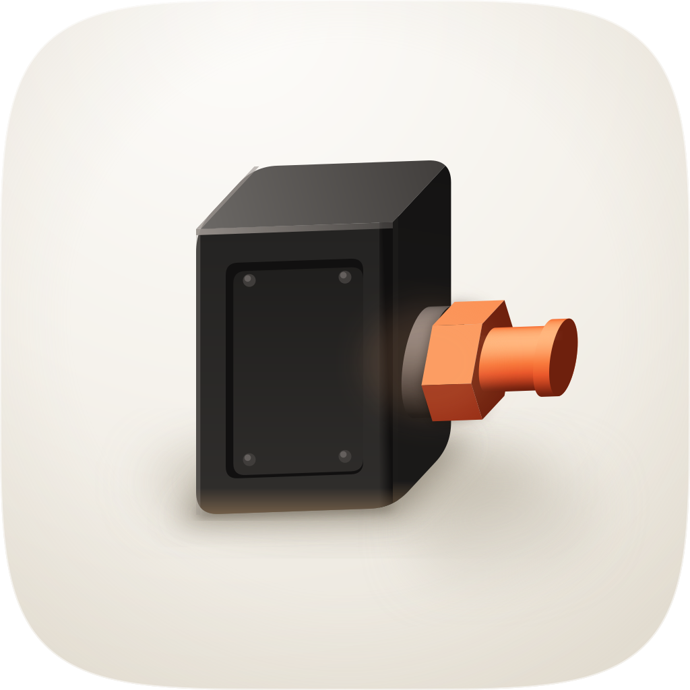  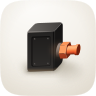 |
11 / 12 | Clears all four non-negotiables on the renders beside it: designed for the shared squircle with no baked corner or shadow; ink centroid (497, 503) against a 512 target; nameable filled-black (a casting with a stepped fitting in its flank); 16px luminance std 0.276, against the predecessor's 0.102 and a 36-icon family median of 0.176. One key light, and every curved surface's gradient is derived from it rather than placed — the hex nut's three visible flats take Lambert 0.80 / 0.77 / 0.03 off the same vector. Two hue families, accent confined to the drive. Front face L 0.141 against ground L 0.95 is 6.7:1 on rubric 7. Four named layers, identity carried by shape and value. Held back from 12 on rubric 11: the device is nameable and the signature move is real, but the object's category read is a junction box, so the semantics lean on the name beside the tile. |
| C2 · icon-engineC-1b7c33-2.pngGPT Image 2 raster, four corpus references — material donor | 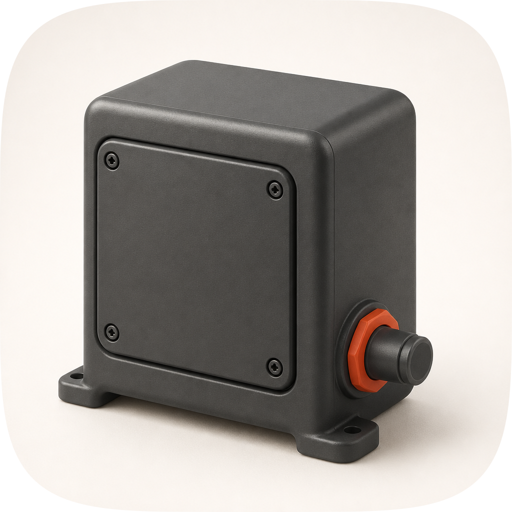 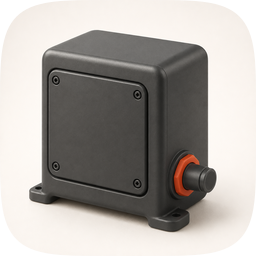 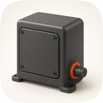 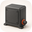 |
8 / 12 | The best material in the set and the reason the master was rebuilt: generous rounded arrises, real ambient occlusion in the panel rebate, and mounting feet that say bench apparatus rather than enclosure. Loses on rubric 7 — its casting sits at L 0.37 against a ground of 0.90, which is 2.4:1 and under the 3:1 floor — on rubric 9, because a flat cream field with no cushion, no rim and no vignette is a product render rather than Tahoe, and on rubric 10, since a single-layer raster is the named 76% failure mode. Its accent is also under-weighted: the fitting is a 1px dot at 16px, so the tile's warm mark disappears exactly where the family's does not. Salvaged into the master: the corner radius (BODY_R 34, PANEL_R 18) and the rounded access cover. |
| C1 · icon-engineC-f10c19.pngGPT Image 2 raster, four corpus references | 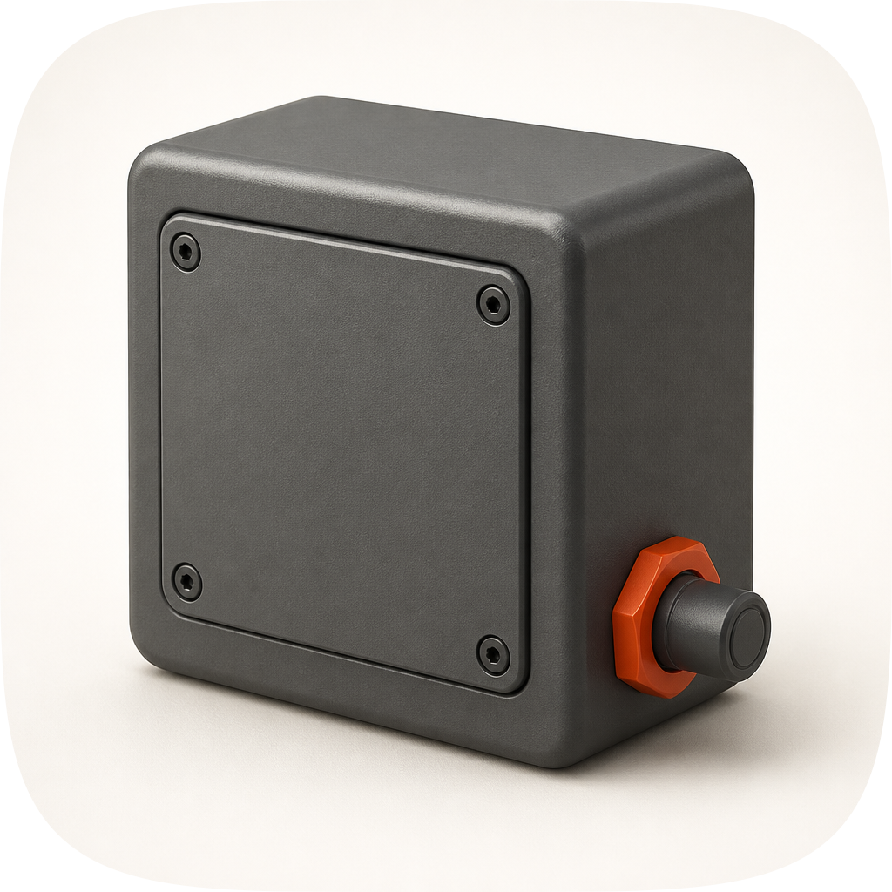 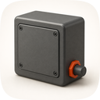 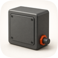 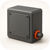 |
8 / 12 | The same take without the feet, and it loses the same three checks for the same reasons. It reads more as an anonymous grey box and less as apparatus, which is why C2 was the one read for material. Both rasters also ignored the brief's instruction to make the fitting the hero, which is a useful negative result: passing four corpus references transfers the material and the ground treatment, and does not transfer where the emphasis goes. |
| B · icon-engineB-arrow-6d3194.svgArrow 1.1 vector take from the spec as brief | 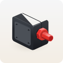 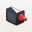 |
7 / 12 | Passes the four non-negotiables — its silhouette is legible and its 16px std is 0.290 — and then fails four of the rest. Rubric 5: the box is lit from the upper left while the fitting is lit from the right, and a hard white wedge on the top face belongs to no key at all. Rubric 6: the accent came back crimson rather than the family's vermilion, and a blue-grey tint on the casting makes a third hue. Rubric 8: no contact shadow, so the object floats, and the top-face wedge reads as a hole rather than a plane. Rubric 9: flat hard-edged vector, which is this family's stated failure mode. Nothing salvaged; the shapes it found were already in the master. |
| prev · the superseded masterthe icon this commission replaces, kept for the comparison | 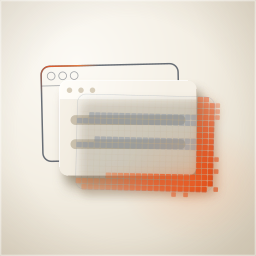 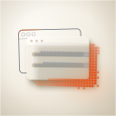  |
4 / 12 | Two non-negotiables failed, which is why the commission was reopened. Rubric 3: a line-art window outline is not nameable as a filled black shape, and it was the only outline in a family of modelled objects. Rubric 4: 16px std 0.102, against the family median of 0.176 — the ×6 magnification beside it is noise, not an object. It also spread the warm accent as a decorative mosaic field instead of putting it on the focal element (rubric 6), carried no light model (5) and shared its three-grey-circles window device with mac-craft (11). Its renders are kept here rather than deleted so the delta is on the sheet and not just in a report. |